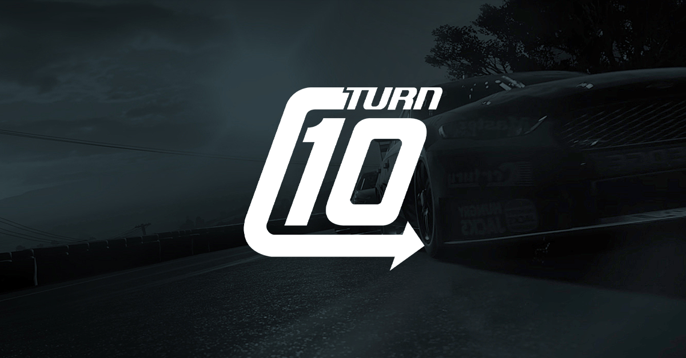
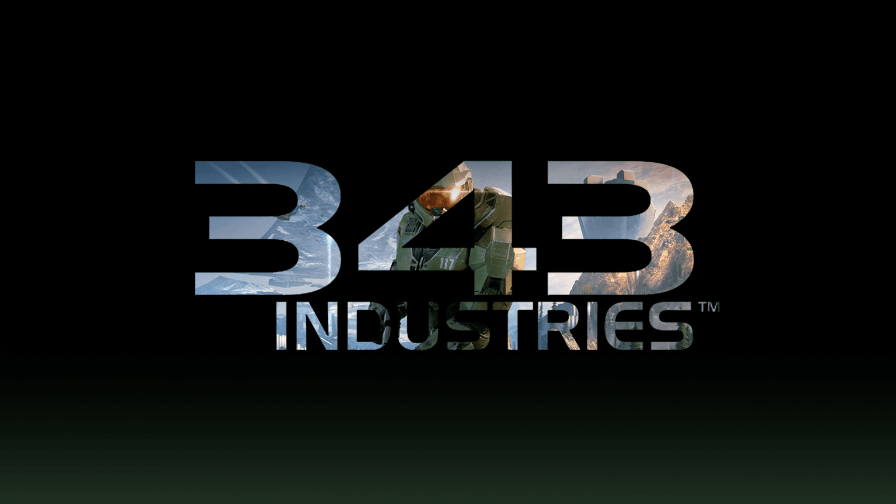

Jobs: Xbox Game Studios
Note:
This page is out of date and written in the present tense. In March of 2024 I left Turn 10 Studios to join Riot Games which I have not created a page for yet.
Turn 10 — Tech Share and Security
I work at Turn 10 studios leading ForzaTech's security and technology sharing teams. ForzaTech is the engine behind Forza Motorsport, Forza Horizon and Fable.
Turn 10 and Playground Games are the two sibling studios under the leadership of Alan Hartman. Our studios have a history of collaboration with a shared engine lineage that has diverged over time while developing multiple AAA games concurrently. The tech share team exists to remove obstacles between technology team to improve architecture alignment, code alignment and access to resources.
ForzaTech's security team acts as a conduit for security knowledge and technology. We are responsible for anti-cheat, anti-piracy and have shared responsibilities in the domains of player safety and privacy.
I initially joined Turn 10 as a senior engineer on the Tech Share team and currently work as tech share's dev lead and manager, the security team's dev lead and manager, and as an IC.

343 Industries — Halo Infinite
Software Engineer — World Gameplay Engineering
At 343 Industries I had quite an interesting start. I ramped up right as covid-19 was sending us all home, the hiring manager that brought me on had left the company while I was in the immigration process, and the gameplay team had substantially changed it's mission statement multiple times from when I was interviewed to when I started.
The role was primarily to support the gameplay engineering team which was primarily there to support game designer. This allowed me to lean on my game engine and systems development experience to get my hands dirty on deep debugging, fixing architecture issues with gameplay systems and reviving old previously-working systems such as co-op.
I also spent a fair bit of time working on loan to the systems team doing engine programming work, mostly to fix bugs and diagnose tricky crashes.
Although I got to work on some very interesting problems, this gameplay team was not a particularly good fit for me. On December 8th 2021, the launch date of Halo Infinite: I transferred to Turn 10 Studios to work on ForzaTech's tech share team.


« Snowed In Studios